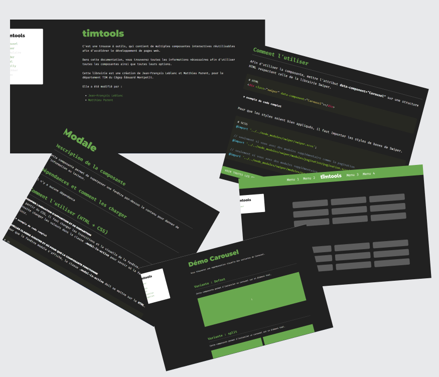

Documentation
Développement
Le but de ce projet était de concevoir un aide mémoire avec la matière que l’on a vue lors des dernières sessions. Nous devions faire la documentation et les exemples sur chaque composante.
Voir le projet01